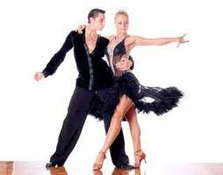
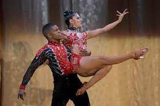
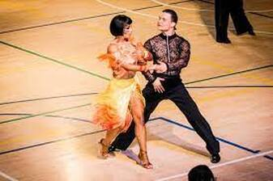
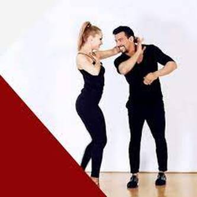
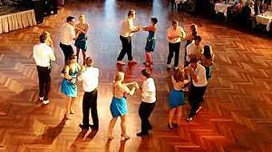

ESTILOS
Salsa venezolana
Salsa cubana
Salsa en rueda cubana
Salsa en línea o al estilo de Los Ángeles
Salsa estilo Caleña
Salsa estilo Nueva York
Salsa puertorriqueña
IMAGENES
|  | ||
|  |  | |
|  |  |
PAGINA WIX
VIDEOS DE APOYO
VIDEO FINAL
Esta es una pagina HTML para sistemas